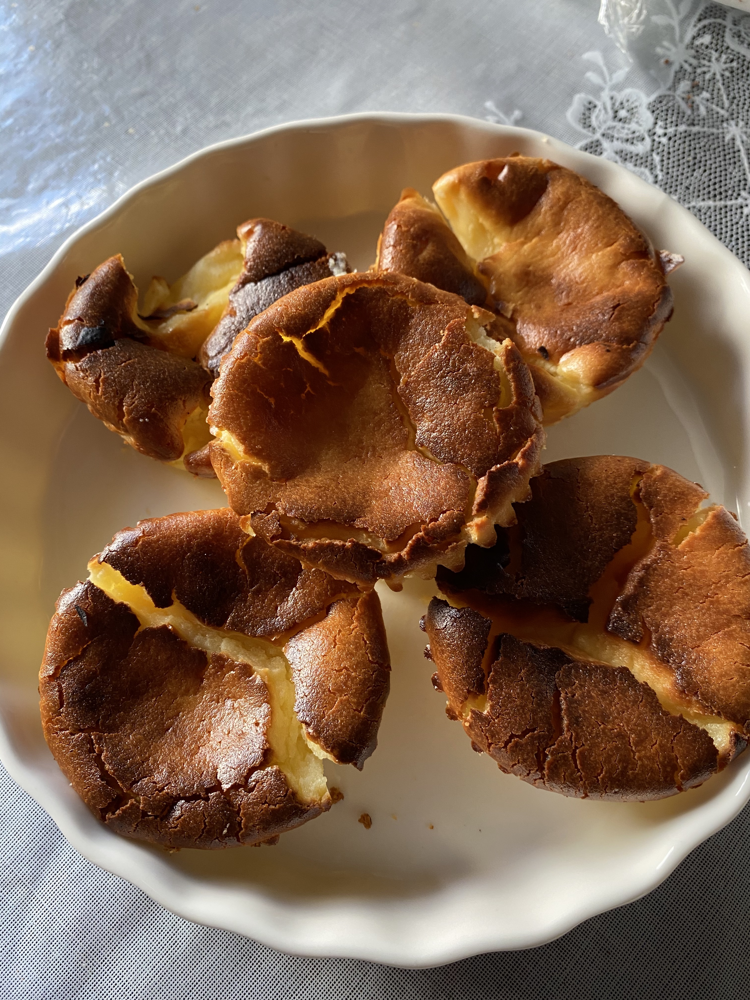

Mini Basque Cheesecakes

During one afternoon, I was craving cheesecake, but did not have enough cream cheese. Fortunately, I discovered this recipe by Catherine Zhang that only required a few ingredients. I was also curious about how a basque cheesecake tastes like and thought this small serving recipe was perfect for a first attempt at baking it. It was quite simple to make and it was so scrumptious!
Ingredients
- 150g (2/3 cup) cream cheese, room temperature
- 50g (1/4 cup) sugar
- 60g (1/4 cup) heavy cream
- 1 large egg, room temperature
- 3g (1 tsp) cornstarch
- 1/4 tsp vanilla paste
Steps
- Preheat oven to 250°C (480°F).
- Line a 4-inch cake tin (or muffin tin) with parchment paper.
- Beat the cream cheese in a large mixing bowl.
- Add the sugar, cornstarch, and vanilla bean paste.
- Whisk until smooth.
- Add the egg and mix until completely smooth.
- Stir in the cream and the pour into the cake/muffin tin.
- Bake for 13-15 minutes.
- Remove and cool for 15 minutes, then place in fridge to cool completely.
- Once cooled, slice and enjoy!
Credit
Return to home